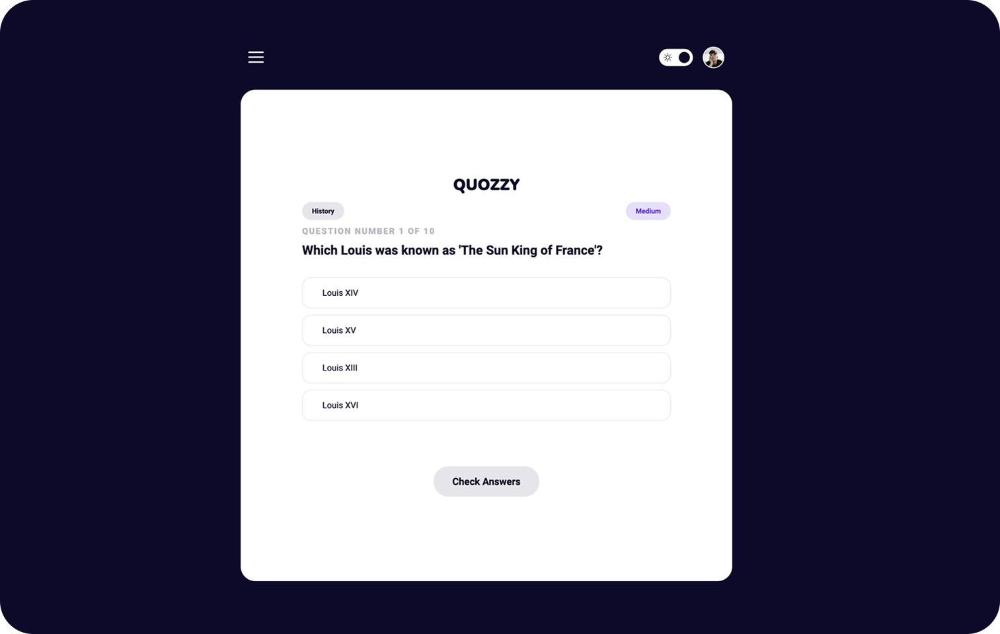

Quozzy [Open Trivia API Database Game]
As a junior frontend developer, my motivation for creating this project was to gain hands-on experience. in connecting with an external API and improve my JavaScript skills. I wanted to apply my knowledge theoretical in a real and challenging project.
I developed this project because I wanted to familiarize myself with the process of requesting and receiving data from a API, as well as work with the structure and format of the returned data. Also, I wanted practice data manipulation and information presentation on the frontend.
The problem that this project solves is to provide an interactive platform where users can receive trivia questions from the Open Trivia API and see the corresponding answers. This provides a fun and educational way to practice general knowledge and test students' skills users in a trivia game.
Through this project, I learned how to make API requests using JavaScript and how to handle the API response to display the desired information in the UI. I also won experience in the manipulation and presentation of dynamic data, as well as event handling and user interaction. In addition, I improved my understanding of the fundamental concepts of JavaScript and I strengthened my troubleshooting and debugging skills. In summary, this project allowed me apply and reinforce my frontend knowledge while developing an interactive application and entertaining.
Features
 Question
and answer game
Question
and answer game- Correct and
incorrect questions counter
- Different
endings depending on the number of correct answers
Technologies
- HTML
- CSS
- JavaScript